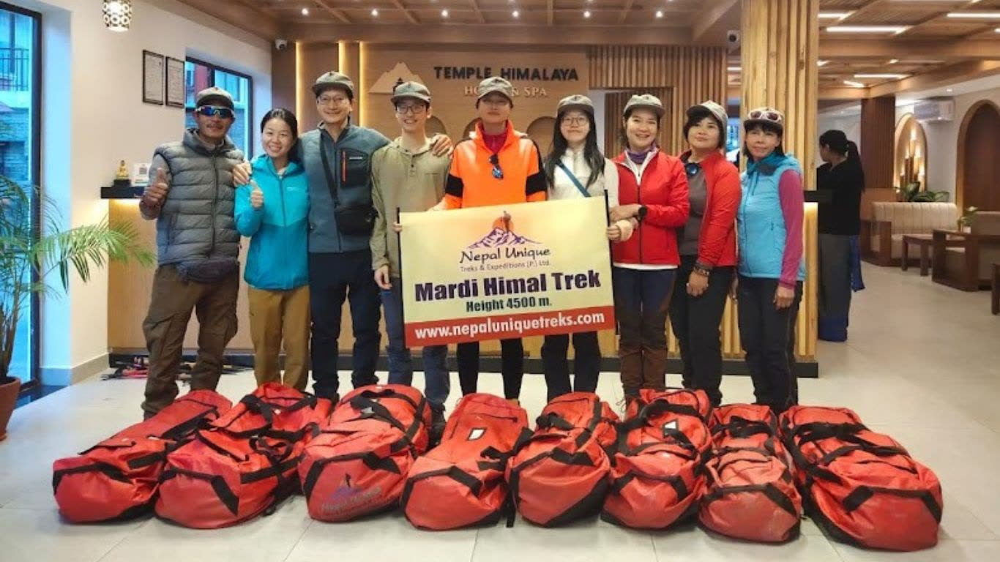
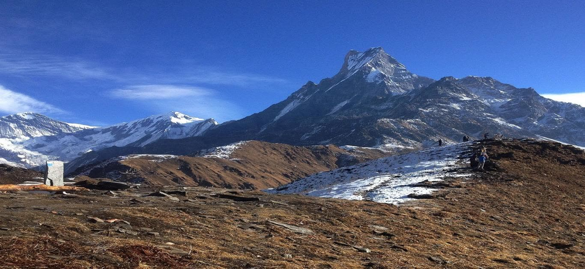
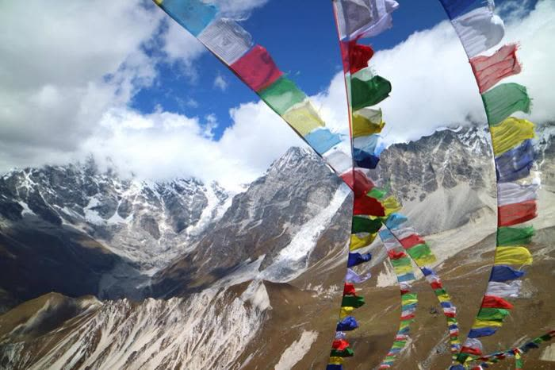
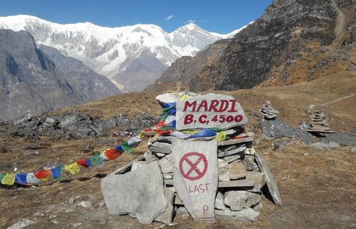
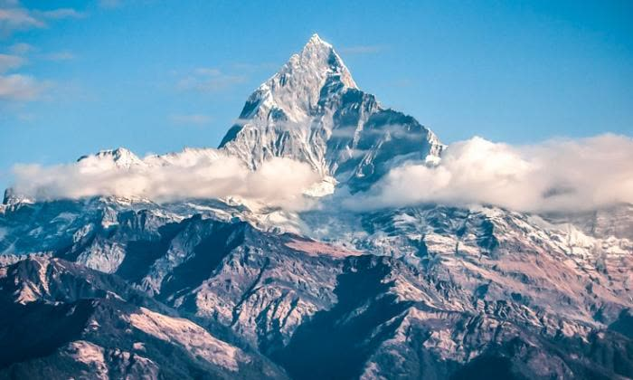
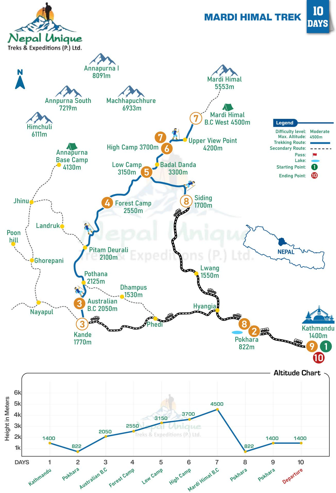

Mardi Himal Trek
Explore the 10-day Mardi Himal Trek itinerary with cost details from Kathmandu. Discover the hidden trails, stunning Annapurna Base Camp Trek, & responsible and experience-guided adventures with Nepal Unique Treks.





Key Trip Facts
Trek Overview
Trip Highlights
Mardi Himal Trek Overview
Explore the 10-day Mardi Himal Trek itinerary with cost details from Kathmandu. Discover the hidden trails, stunning Annapurna Base Camp Trek, & responsible and experience-guided adventures with Nepal Unique Treks . Mardi Himal Trek is a newly opened tea house trekking route in Nepal, situated in the Annapurna Conservation Area Project. This trekking route has recently become famous amongst the new trekkers with previous hiking experience. So, if you are also looking for a trekking route to help you start your adventures, read this entire Mardi Himal Trek package by Nepal Unique Treks.
A great alternative to the Annapurna Base Camp Trek!
Known to be one of the greatest alternatives for the Annapurna Base Camp Trek, the Mardi Himal Trekking route sits just on the east side of the ABC trail. Even after being such a relatively easy and beginner-friendly trek, not many people know about this trek. Why so? Well, because this trekking trail is also relatively remote and has received a few promotions. However, in recent times, word of mouth has also played a strong role in helping many enthusiastic trekkers know about this route.
With Nepal Unique Treks, the trek starts as you arrive in Kathmandu. After spending a night in Kathmandu, we drive towards Pokhara in a public tourist bus and then from Pokhara to Kande, the starting point of the Mardi Himal Trek from Pokhara .
A fun fact here: throughout the Mardi Himal Trekking journey, we will visit 5 camps, so out of 10 days on the trail, we spend 5 nights in camps.
The maximum altitude of the Mardi Himal Trekking route is 4,500 meters, which means you will experience an alpine environment and get beautiful Himalayan views as well. Just imagine standing 4500 meters above sea level and seeing some of the mighty mountains like Mardi Himal, Machhapuchhre, Annapurna South, and Hiunchuli surrounding you. Nothing less than a dream come true.
Well, let us also tell you that, unlike many other trekking routes, we will not backtrack the same route while returning from the Mardi Himal Base Camp. This means that the route ascends via Forest Camp, Low Camp, and High Camp to Mardi Himal Base Camp. However, while returning, we follow the route via Siding village and then directly to Pokhara. Isn't that another reason why Mardi Himal Trek, also known as the Mardi Himal Base Camp Trek, stands as one of the adventurous Trekking Routes in Nepal?
Why Choose Nepal Unique Adventure Treks?
Even though the Mardi Himal Trek is considered a relatively moderate trekking route, trekkers cannot go for a solo trek here. This means you must book the Mardi Himal Trekking package from a government-licensed trekking or travel agency. And if you necessarily have to choose a trek, why not choose the one with a long and successful history? That's why we recommend choosing Nepal Unique Treks.
If you book any trekking or travel package, including the Mardi Himal Base Camp Trek with us, we ensure many benefits, such as:
An advantage and backup of a trekking agency with over two decades of experience.
Nepal Unique Treks stands as a fully licensed trekking agency, and we make sure to comply with all the regulations.
Our team is built of some of the highly professional, seasoned, and certified guides with fluent English. Besides, they also have a deep understanding of the culture, tradition, and lifestyle of this trekking region. So, they will be more than helpful for you to interact with the locals.
Our all-inclusive packages cover permits (ACAP and TIMS), meals, tea house accommodations, transportation, and even hot showers and Wi-Fi where available. Therefore, you can simply focus on walking the trail.
Nepal Unique Treks keeps trekkers' safety as its priority. With that in mind, you can expect our guides to carry first aid kits, oximeters, and emergency communication devices to keep the trekkers safe.
We promote sustainable tourism by minimizing environmental impact, supporting local communities. Moreover, the Nepal Unique Treks team also follows the Leave No Trace principles on any trekking route we visit.
Permits for Mardi Himal Trek
If you want to go for the Mardi Himal Trek, remember that you must obtain a permit and a pass to be eligible for this adventurous and exciting journey. Make sure that you obtain the following permits before hitting the Mardi Himal Base Camp Trek:
Annapurna Conservation Area Permit (ACAP)
Trekker's Information Management System
The local representatives from Nepal Unique Treks will assist you in obtaining both of these permits. Remember that these permits play a crucial role in helping authorities keep track of the trekkers. Therefore, every trekker must obtain these permits to be eligible for going on the Mardi Himal Base Camp Trek.
Mardi Himal Trek Cost for 2025/2026
The Nepal Unique Treks is known for the affordable excellence that it offers along with its travel packages. We make sure to keep the cost of the Mardi Himal Trek completely transparent to the trekkers to help them make their calculations. So, you can kindly check the table below to understand the Mardi Himal Trekking Cost for 2025 and 2026.
Note: Different factors, including sudden changes in weather, delays, extra stays, etc, can sometimes influence the overall package cost. Therefore, we recommend the trekkers to obtain travel insurance that covers high altitude (at least 5000 meters).
Mardi Himal Trek Itinerary: Day by Day
10 Days program for Mardi Himal Trek. Daily timings and sequences remain flexible according to weather, flight operations, and group pace.
Day 1: Welcome i Kathmandu Tribhuvan International Airport 1345m
Approx. 1,345 m / 4,413 ft
Just as the plane enters Nepal's territory, you start getting jaw-dropping glimpses of different mountains. In a short while, you will start seeing the vibrant city areas, and then you will land at the Tribhuwan International Airport (Kathmandu). Our local representatives receive you at the airport and then drive you to the hotel in Kathmandu. Take your time to check in at the hotel room and freshen up before taking yourself for a quick stroll around the city. In the evening, you will meet the guides who will provide you with a proper description of the Mardi Himal Base Camp Trek map. After that, you can have your welcome dinner and return to the hotel for a sound sleep.
Day 2: Drive from Kathmandu to Pokhara (810 m), 7/8 hours by bus
Approx. 810 m / 2,657 ft
Without much delay, we begin the journey towards the Mardi Himal trail on the second day. As you wake up and have breakfast, the local representatives from Nepal Unique Treks & Expeditions will take you on a drive towards Pokhara. This scenic drive can be a little bumpy up until a place named Mugling, but after that, the route has recently been extended, making it very smooth. Within the next 6 to 7 hours, the bus covers a total of 201 kilometers, taking us to the city of lakes, Pokhara. After checking in at the hotel room and getting freshened up, don't waste any time and go for a quick walk around the Phewa Lakeside. With several streets, hotels, restaurants, cafes, clothing stores, etc, the lakeside stands as one of the most vibrant areas in Nepal. After crossing some of the terraced farms, rushing rivers, and charming villages, and before heading towards the Mardi Himal Trek, you can get the perfect rest here in Pokhara.
Day 3: Drive to Kande and trek to Australian Camp (2,050m)
Approx. 2,046 m / 6,713 ft
As you wake up on the third day and get ready, our guides will drive you to Kande, the starting point of the Mardi Himal Trek. Located about 31 kilometers away, Kande consists of 412 houses and sits at an altitude of 3,848 meters above sea level. It only takes 1 hour for us to drive from Pokhara to Kande. After that, the guides will lead you on a trail towards the Australian Camp, a 1.5 to 2-hour-long trek. Let us tell you that you can still get the best views of the Annapurna range even at such a low altitude. Moreover, this well-maintained section of the Mardi Himal Trek also passes through lush forests and traditional villages. As you reach Australian Camp, you can see outstanding views of the Annapurna range, including Annapurna South, Hiunchuli, Machhapuchhre (Fishtail), and Lamjung Himal. Just give yourself some time to believe what you see. Besides, you also get to soak in a pleasant, calm, and peaceful environment while you are at the Australian Camp. We will have our dinner and spend a night here at the Australian Camp before advancing further on the Mardi Himal Base Camp Trekking route.
Day 4: Trek from Australian Camp to Forest Camp (2,550m)
Approx. 2,550 m / 8,366 ft
On the fourth day, we leave Australian Camp behind and advance on the trail towards Forest Camp. This camp is located at an altitude of 2,550 meters above sea level and deep inside the woods. While the trail only takes about 5 to 6 hours to complete, the trekkers will walk through lush rhododendron, oak, and maple forests. Besides, the filtered sunlight, sound of birds chirping, calm surroundings, and relatively easy trail make the walk more gentle and refreshing rather than a tiring one. As you reach Forest Camp, you start sensing that crisp and cool mountain air hitting you. This outstanding place is perfect for you to sit beside, take a few sips of a warm drink, and watch the sun go down as the evening falls. In the evening, we will arrange dinner and an overnight stay at Forest Camp for the trekkers.
Day 5: Trek to Low Camp (3,150m)
Approx. 3,150 m / 10,335 ft
The Mardi Himal Base Camp Trekking map is so full of camps that we will spend half of the itinerary in different camps. With that being said, our journey for the fifth day also takes us to another camp, the Low Camp. Walking through some charming villages and terraced fields, we reach the low camp within 5 to 6 hours. Besides, the trail also leads us through ancient moss-draped forests. These areas are so quiet that you will only hear the sound of Himalayan pheasants and rustling leaves. Walk for a few hours, and then you start seeing the mighty Machhapuchhre (Fishtail) mountain along with the long route in front of you. As we reach the endpoint for today, we will settle in a village having one-storeyed houses with a blue tin roof. This is where we spend the night after having dinner with the night view of the Machhapuchhre mountain.
Day 6: Trek to High Camp (3,700m)
Approx. 3,700 m / 12,139 ft
Get ready to walk on an alpine terrain that ascends above the tree line. As you wake up and have your breakfast, the guides remind you about the journey for the day. As we cover some distance, the trail narrows and climbs steadily. Besides, it also reveals the jaw-dropping panoramas of Annapurna South, Hiunchuli, and the sacred Machapuchare. With each step, you will start feeling the air getting thinner along with the vegetation, and your legs getting tired of such an alpine ascent. It merely takes about 4 to 5 hours for us to cover this section of the Mardi Himal Trekking route, and after that, you have almost half of the day to rest. High Camp, a place sitting at an altitude of 3,700 meters above sea level, serves as a perfect spot to stop for the day. So, we will have dinner and rest for the night before continuing the journey on the next day.
Day 7: Trek to Mardi Himal Base Camp (4,500m) and back to High Camp
Approx. 4,500 m / 14,764 ft
Finally, the day has arrived, the day that you have walked patiently for, and the day you reach the highest point of the Mardi Himal Trekking map. Yes, we have finally arrived at the day when we reach the Mardi Himal Base Camp, sitting at an altitude of 4,500 meters above sea level. As you leave the high camp, you will realize that this section of the trail is both challenging and awe-inspiring. Also, let us tell you that we begin today's walk before sunrise, which means it's a perfect chance for you to see the sun gradually rising. The more you ascend this trail, the clearer a view of the Himalayan panorama and wind-swept plateau you get to witness. Furthermore, the route also offers some unobstructed views of the Annapurna Massif, Gangapurna, and the iconic Machapuchare (Fishtail Peak). Within the next 4 to 5 hours, we will be standing on the Mardi Himal Base Camp, the highest point of this entire trekking route. A place with very few buildings but a wind-swept plateau offering mindblowing Himalayan views. After spending some time delving deep into the views and cherishing the accomplishment, we make our move back to the high camp. Another dinner to have and another night to spend in the High Camp before returning to Kathmandu.
Day 8: Trek to Siding Village (1,750m) and drive back to Pokhara
Approx. 810 m / 2,657 ft
After watching the sun rise over the Annapurna region one last time, it's time for us to descend towards the Siding village. This section of the Mardi Himal Base Camp Trek takes us through the dense rhododendron forests and mossy trails. Let us also tell you that this section of the trail is quieter, less trodden, and incredibly scenic, giving you a sense of Nepal’s untouched wilderness. Furthermore, we also pass through tranquil woodlands, terraced fields, and remote hamlets in this part of the Mardi Himal Trekking route. Siding, a beautifully decorated, peaceful Gurung village, is located at an altitude of 1750 meters above sea level. Take your time to go for a short rest and have a final cup of masala tea because after that, we will drive you to Pokhara in a private vehicle. Not to mention, you have another evening to spend on the lakeside of Pokhara before returning to Kathmandu the next day.
Day 9: Pokhara to Kathmandu by Tourist bus, 7 hrs,1345 m
Approx. 1,345 m / 4,413 ft
We are finally on the second-to-last day of the Mardi Himal Base Camp Trek. As you wake up in the morning and have your breakfast, our representatives take you on another scenic drive to Kathmandu on a tourist bus. Another amazing journey, but this time, back from Pokhara to Kathmandu. It takes about 7 hours for us to reach Kathmandu and our representatives will take you directly to the hotel. Utilize the rest of the day for resting and strolling around the nearby areas. Also, we recommend the trekkers to rest at some of the pubs, cafes, and even the massage centers to release all the tiredness that they had after such an adventurous trek to the Mardi Base Camp.
Day 10: Final Departure from Nepal 1345m
Approx. 1,345 m / 4,413 ft
Finally, we have come to the last day of the 10-day Mardi Himal Trek. Our representatives will pick you up from the hotel and drive you to the Tribhuwan International Airport, from where you can board the flight and depart from Nepal towards your home.
What is Included (Regular Package)
What is Excluded
Booking Dates & Availability
Packing List for Mardi Himal Trek
Essential Info: Down jackets and sleeping bags can be rented/arranged per package inclusions.High-Altitude Trail Gear (6 items)
Cold-Weather Layering System (5 items)
Sleep, Health & Permits (3 items)
Read before you book: Mardi Himal Trek
Practical logistics derived directly from this package's route facts, inclusions, and elevation profile.
Accommodation & Meals (Hotel, Lodge & Tea House)
Accommodation follows the package grade (Hotel, Lodge & Tea House) in Kathmandu and along the Annapurna route. Check your package Includes section for included meals and Kathmandu hotel nights.
Permits & Local Logistics
Transportation is arranged via Bus, Private Car, Flight. Applicable permits listed in the package inclusions are arranged by Nepal Unique Treks prior to departure.
Route Difficulty & Elevation (4500 m)
Mardi Himal Trek is rated Moderate with a maximum elevation of 4500 m. Follow your guide's pacing and stay hydrated throughout the 10 Days itinerary.
Best Time to Visit (Spring, Monsoon, and Autumn)
Recommended operating season on the source page: Spring, Monsoon, and Autumn. Additional official notes from the source page follow below.
Traveller Useful Information
Well, there is no doubt about how amazing the Mardi Himal Trekking trail is. This adventurous trekking trail in the Annapurna region presents trekkers with the best views of mountains, including Machhapuchhre (Fishtail Mountains), valleys, serene rhododendron forests, and authentic Gurung and Magar villages. However, to ensure the best experience, you must be smart and informed enough to choose the best season.
Spring (March to May) and Autumn (September to November) seasons are considered two of the best seasons for any treks, including the Mardi Himal Trek. During these seasons, the temperature remains mild (between 50-70 degrees Fahrenheit). Due to that, you can expect clear skies, vibrant rhododendron blossoms, an,d not to mention, the outstanding sightings of snow-covered peaks. Talking about the autumn season, this season comes right after monsoon, offering a pleasant and stable weather. For that reason, you can again expect outstanding views of the Himalayas, clear skies, and the temperature also remains within 45 to 65 degrees Fahrenheit.
All these factors make trekking more convenient and adventurous for the trekkers. Besides, you will also find almost all the tea houses, lodges, and hotels open during the Spring and Autumn seasons. With that being said, we recommend you not choose the monsoon season that starts in June and lasts till August. Well, during this season, heavy rainfall makes trails slippery.
Moreover, in the rainy season, the entire Mardi Himal Trekking route remains leech-prone, and you will also have to walk with much clouded views. Nevertheless, if you want some challenges and adventures, we also open the bookings in these seasons. However, we recommend you to book the Mardi Himal Trekking package in spring or fall for the best balance of weather, views, and trail conditions.
Mardi Himal Base Camp Trek is considered to be moderately difficult. Due to the trail being comparatively easy, this trekking journey is perfect for individuals with a good level of physical fitness and some mental preparation. Even though the trek to Mardi Himal Base Camp is not overly technical, the trail does involve steep ascents, rocky terrain, and narrow ridges. Other than that, high altitude (4500 meters) also stands as a factor making this trail physically demanding.
However, with some physical, mental preparation and a little bit of prior experience, you can certainly hit this once-in-a-lifetime adventurous trail. Ascending to such a high altitude will not be easy. Therefore, we recommend that all trekkers prepare themselves very well. Moreover, following all the instructions given by the guides and keeping a slow and steady pace right from the beginning of the journey also helps a lot. In that way, you can stay within the trail and maintain your physical and mental fitness throughout the 10-Day Mardi Himal Trekking journey.
Even though the Mardi Himal Trekking route is considered to be a relatively easy trekking route in the Annapurna Region, one cannot go for this trail without proper preparation. As mentioned in the difficulty section, several factors make this trekking route not so easy for many people. So, to make sure that you stay confident and cover the entire Mardi Himal Trekking route with ease, follow these preparation methods:
Physical and Mental Preparation
Train for physical and mental fitness in advance (for about 4 to 6 weeks). Go for physical cardio training like hiking, running, or stair climbing, and some strength exercises like squats and lunges. These physical preparations will help you handle 5–7 hours of daily trekking. Besides, you shall also go for meditation to prepare yourself mentally for this trek.
Permits and Documentation
Once you prepare physically and mentally, you need to make sure that all the permits and documentation are included in your backpack. Booking the package with us means these permits will be arranged by our team prior to the trekking journey. You will require ACAP and TIMS to be eligible for trekking the Mardi Himal Base Camp trail.
Health Precautions
Make sure to consult your doctor and go for a quick full-body checkup before hitting the trail. Moreover, we also recommend that trekkers carry Diamox, a medication for high-altitude sickness. Besides, you can also ask for garlic and Timur (Sichuan pepper), as both of these help you stay safe from altitude sickness.
Acclimatization Training
As we are walking all the way up to 4500 meters above sea level, acclimatizing stands as one of the most important things to take care of. To do so, we recommend you go for some quick hikes and shorter treks before hitting the Mardi Himal Trek. Besides, our package also includes an acclimatization or rest day for a better experience.
Cultural Awareness
We recommend you try learning some Nepali phrases like Namaste, which means Hello. Besides, you can also do a little research about the Gurung and Magar cultures. With these cultural preparations, you can be aware of respecting the unique culture and tradition available in the Annapurna Trekking region.
The Mardi Himal Trekking trail offers basic yet comfortable and satisfactory accommodation options. These accommodation centers, including teahouses, guesthouses, and hotels, take you deep into the unique culture and tradition of the Gurung and Magar communities. Besides, you can also expect these hotels and guesthouses to provide you with a cozy bed and blanket, an attached toilet (not in all), and hot showers.
Talking about food, the Mardi Himal Trek package with Nepal Unique Treks & Expeditions includes three meals every day. Here are the types of food that you can expect during this trekking journey:
Teahouse Meals: Teahouses serve a variety of meals, including Dal Bhat (a Nepali staple of lentils and rice) and Western options.
Local Flavors: You can expect to enjoy local Nepali cuisine during the trek, prepared with locally sourced organic vegetables.
Western Options: Many teahouses also offer Western food options to cater to diverse tastes.
During the Mardi Himal Trek with Nepal Unique Treks & Expeditions, transportation typically involves a bus and a shared jeep. However, Nepal Unique Treks & Expeditions can also arrange a private jeep or even an airplane flight if you want a rather comfortable and private way to travel from Kathmandu to Pokhara, Kande, and then back from Siding to Pokhara and Kathmandu. However, one thing that we can ensure is that all the transportation media that we arrange are safe, secure, and driven by professional drivers with a valid license.
Smart packing always stands as one of the most important things to make any trekking journey exciting and safe. This also stays the same for the Mardi Himal Trekking package. If you pack smart enough, you will have everything required for one of the best and adventurous Treks in Nepal. Furthermore, it also ensures comfort and safety across varied terrains and weather. The professional guides at Nepal Unique Treks & Expeditions will certainly brief you about what to pack for this trek after you book the package. However, let us also provide a comprehensive list of essentials:
Clothing:
Moisture-wicking base layers (2 tops, and 1 bottom).
Insulating layers: fleece jacket and lightweight down jacket (rated to 20°F for Base Camp).
Waterproof, breathable rain jacket and pants.
2 to 3 quick-drying trekking shirts with long sleeves for sun protection.
1 pair of convertible trekking pants (zip-off to shorts).
Warm hat, sun hat, and buff or neck gaiter for dust/wind.
Footwear:
Waterproof, broken-in trekking boots with good ankle support.
Lightweight camp shoes or sandals for teahouse evenings.
3 to 4 pairs of moisture-wicking trekking socks (wool or synthetic, avoid cotton).
Backpack and Accessories:
30–40L daypack with rain cover.
Trekking poles (collapsible, highly recommended for descents).
Lightweight sleeping bag (rated to 20°F, provided by us if requested).
Hydration and Nutrition
Reusable water bottle (at least 1L) and water purification tablets.
Hydration bladder (optional, 2L capacity).
Energy snacks (e.g., nuts, dried fruit, or protein bars; meals provided in our package).
Health and Hygiene:
Personal medications and a small first aid kit (bandages, blister pads, pain relievers).
Sunscreen (SPF 50+), lip balm with SPF, and hand sanitizer.
Quick-dry towel, biodegradable soap, and toiletries (travel-sized).
Toilet paper and ziplock bags for waste (to maintain eco-friendly trails).
Electronics and Navigation:
Headlamp with extra batteries.
Power bank (10,000mAh) for phone charging (Wi-Fi available at some teahouses).
Smartphone or camera for photos (The views are going to be stunning!).
Other Things to Pack:
Sunglasses (UV-protective, category 3 or 4 for snow glare).
Lightweight gloves, Lightweight gloves and gaiters (optional for spring or winter treks).
Notebook and pen for journaling or sketching Himalayan vistas.
Some amount of Nepali Rupees, especially in cash (credit cards might not be accessible at higher altitudes).
Now that you have gone through the entire Mardi Himal Trekking package, you might be excited enough to go on this adventure. Just take your time to picture yourself standing at the Mardi Himal Base Camp (4500 meters) and several other camps throughout. In that case, you can completely count on Nepal Unique Treks for the best adventures.
Just click the BOOK NOW button on the right-hand side of this package and make a 30% deposit to confirm the Mardi Himal Trek package booking. Besides, if you have any questions or queries, here is what you can do:
Click on the INQUIRY NOW button and send us your queries.
Send your queries and questions to us via WhatsApp, Viber, and Zalo.
Also, you can send your questions via the Contact Us menu from the navigation panel.
Altitude Profile of Mardi Himal Trek
Weather on Mardi Himal Trek
Mardi Himal Trek Route Map

Book This Trek
Contact our Kathmandu coordinators using the booking panel for private or fixed-group departures.
Trip Feedback
Explore verified traveller stories or leave feedback on Nepal Unique Treks.
Visit Nepal Unique Treks